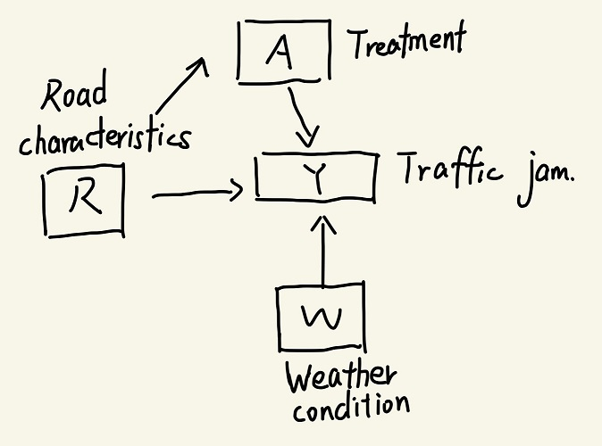

Assumption for Identification
Consistency:The consistency can be assumed for the model because we the potential outcome of traffic jam in our model is defined as a binary variable and the potential outcome will not change because of treatment.
Positivity:We can assume positivity because the probability of each event in real life have to be positive
Exchangeability: One road's realized treatment does not provide any information on what would have happened to another one under various treatment assignments
SWIG
Origin graph:
SWIG:

Identification
Extended g-formula:
Consistency: As what we assumed before, the potential outcome Y(a,l) is equal to Y(a,l,X(l))
- Consistency: As what we assumed before, the potential outcome \(Y(a,l) is equal to Y(a,l,X(l)\), \(\tau(w)=E[Y_i(1)-Y_i(0)|W_i=w] \)
- E[Y(a,l,x)∣X(l)=x]=E[Y(a,l,x)]
- Markov Compatibility:Y(a,l,x)/⊥⊥X(l)
Interpretation
Conditional Average Treatment Effect: Weather condition is an important part that influent the traffic congestion. However, as observed data, we can just consider the conditional average treatment effect
- Conditional average treatment effect (CATE): \(\tau(w)=E[Y_i(1)-Y_i(0)|W_i=w] \)